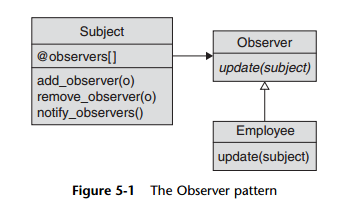

Observer pattern

The Observer pattern allows you to build components that know about the activities
of other components without having to tightly couple everything together in an
unmanageable mess of code-flavored spaghetti. By creating a clean interface between
the source of the news (the observable object) and the consumer of that news (the
observers), the Observer pattern moves the news without tangling things up.
Most of the work in implementing the Observer pattern occurs in the subject or
observable class. In Ruby, we can factor that mechanism out into either a superclass
or (more likely) a module. The interface between observer and observable can be a
complex as you like, but if you are building a simple observer, code blocks work well.